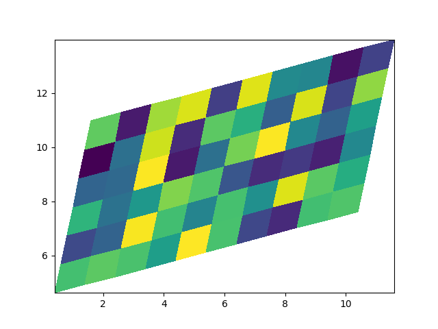

Note
Go to the end to download the full example code
pcolormesh#
axes.Axes.pcolormesh allows you to generate 2D image-style plots.
Note that it is faster than the similar pcolor.
import matplotlib.pyplot as plt
import numpy as np
from matplotlib.colors import BoundaryNorm
from matplotlib.ticker import MaxNLocator
Basic pcolormesh#
We usually specify a pcolormesh by defining the edge of quadrilaterals and the value of the quadrilateral. Note that here x and y each have one extra element than Z in the respective dimension.
np.random.seed(19680801)
Z = np.random.rand(6, 10)
x = np.arange(-0.5, 10, 1) # len = 11
y = np.arange(4.5, 11, 1) # len = 7
fig, ax = plt.subplots()
ax.pcolormesh(x, y, Z)
Non-rectilinear pcolormesh#
Note that we can also specify matrices for X and Y and have non-rectilinear quadrilaterals.
Centered Coordinates#
Often a user wants to pass X and Y with the same sizes as Z to
axes.Axes.pcolormesh. This is also allowed if shading='auto' is
passed (default set by rcParams["pcolor.shading"] (default: 'auto')). Pre Matplotlib 3.3,
shading='flat' would drop the last column and row of Z, but now gives
an error. If this is really what you want, then simply drop the last row and
column of Z manually:
x = np.arange(10) # len = 10
y = np.arange(6) # len = 6
X, Y = np.meshgrid(x, y)
fig, axs = plt.subplots(2, 1, sharex=True, sharey=True)
axs[0].pcolormesh(X, Y, Z, vmin=np.min(Z), vmax=np.max(Z), shading='auto')
axs[0].set_title("shading='auto' = 'nearest'")
axs[1].pcolormesh(X, Y, Z[:-1, :-1], vmin=np.min(Z), vmax=np.max(Z),
shading='flat')
axs[1].set_title("shading='flat'")
Making levels using Norms#
Shows how to combine Normalization and Colormap instances to draw
"levels" in axes.Axes.pcolor, axes.Axes.pcolormesh
and axes.Axes.imshow type plots in a similar
way to the levels keyword argument to contour/contourf.
# make these smaller to increase the resolution
dx, dy = 0.05, 0.05
# generate 2 2d grids for the x & y bounds
y, x = np.mgrid[slice(1, 5 + dy, dy),
slice(1, 5 + dx, dx)]
z = np.sin(x)**10 + np.cos(10 + y*x) * np.cos(x)
# x and y are bounds, so z should be the value *inside* those bounds.
# Therefore, remove the last value from the z array.
z = z[:-1, :-1]
levels = MaxNLocator(nbins=15).tick_values(z.min(), z.max())
# pick the desired colormap, sensible levels, and define a normalization
# instance which takes data values and translates those into levels.
cmap = plt.colormaps['PiYG']
norm = BoundaryNorm(levels, ncolors=cmap.N, clip=True)
fig, (ax0, ax1) = plt.subplots(nrows=2)
im = ax0.pcolormesh(x, y, z, cmap=cmap, norm=norm)
fig.colorbar(im, ax=ax0)
ax0.set_title('pcolormesh with levels')
# contours are *point* based plots, so convert our bound into point
# centers
cf = ax1.contourf(x[:-1, :-1] + dx/2.,
y[:-1, :-1] + dy/2., z, levels=levels,
cmap=cmap)
fig.colorbar(cf, ax=ax1)
ax1.set_title('contourf with levels')
# adjust spacing between subplots so `ax1` title and `ax0` tick labels
# don't overlap
fig.tight_layout()
plt.show()
References
The use of the following functions, methods, classes and modules is shown in this example: